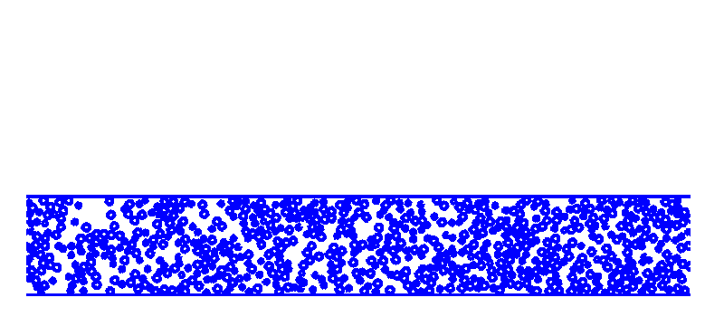
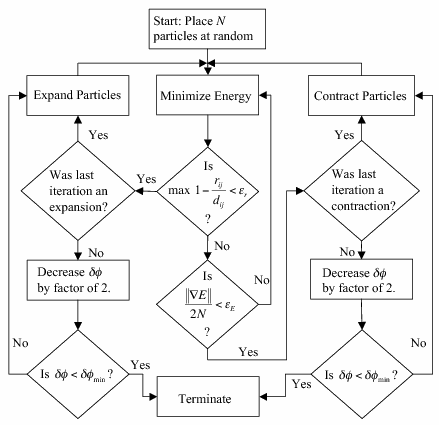
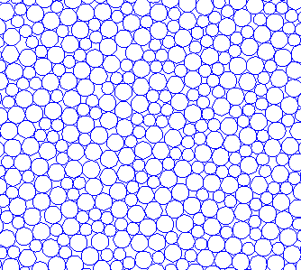

A custom particle packing algorithm was developed (based on a method proposed by Xu et al.1) to
generate random close packings of hard disks in 2D and hard spheres in 3D. The algorithm is available for
download and has been used as the foundation for subsequent packing studies.
Algorithm Overview
The procedure relies on an iterative swell–contract–minimize cycle:
Initialize a random arrangement of non-overlapping particles.
Gradually swell all particles until overlaps appear.
Apply energy minimization to remove overlaps (move particles to nearest non-overlapping configuration).
If energy minimization succeeds, swell again; otherwise contract particles and retry.
Repeat, slowly decreasing the swell/contract step size, until a jammed (RCP) configuration is reached.

Animation of the algorithm in action — particles (shown as disks) swell, develop overlaps, and are repositioned by energy minimization. The cycle repeats with a decreasing step size until a random close packing is reached.

Flowchart illustrating the swell–contract–minimize procedure.

An example random close packing of binary 2D disks generated by the algorithm.
This algorithm can produce both monodisperse and polydisperse sphere and disk packings, and has been extended to
confined geometries (see Confined RCP).
1
K. Desmond,
“Random close packing at extreme size ratios with an Adam-based inflation protocol,”
arXiv:2608.12235 (2026).
View paper.
2
K. W. Desmond and E. R. Weeks,
“Random close packing of disks and spheres in confined geometries,”
Physical Review E80, 051305 (2009).
View paper.
3
N. Xu, J. Blawzdziewicz, and C.S. O'Hern,
“Influence of particle size distribution on random close packing of spheres,”
Physical Review E71, 061306 (2005).
View paper.
Explore how the pressure like μ term and ADAM learning rate
affect a two-dimensional particle packing.
The hosted app is an interactive 2D demonstration of the a newer packing process (citation below).
Choose the number of particles, initial packing fraction, and diameter
distribution; generate an initial periodic packing; and then run or stop
the ADAM-based relaxation directly in the browser.
While the packing runs, the μ and learning-rate sliders can be adjusted in
real time. This makes it possible to explore how the particle-growth
control and optimization step size affect overlaps, energy, packing
fraction, and the evolution of the configuration. The resulting particle
positions and diameters can be downloaded as a CSV file.
The app is intended for interactive exploration and education. It is a
browser-based 2D implementation and is separate from the maintained
rcpgenerator Python package and its compiled numerical engine.
4
K. Desmond,
“Random close packing at extreme size ratios with an Adam-based inflation protocol,”
arXiv:2608.12235 (2026).
View paper.